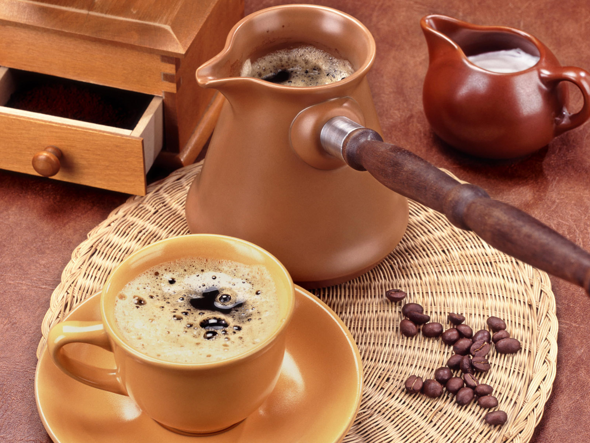
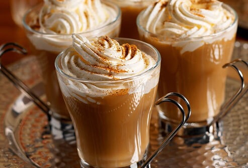
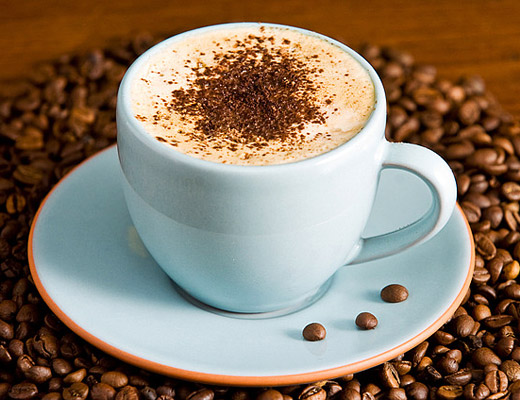
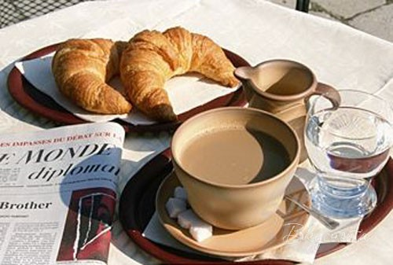

Кофе по-турецки

Приготовление вкусного и ароматного кофе по-турецки.
Ингредиенты:
Кофе латте

Кофе латте - это "вкусное" начало дня для всех, кто отдает предпочтение именно этому напитку.
Ингредиенты:
Кофе по-венски

Кофе по-венски - это нежный, вкусный, оригинальный напиток. Чудесный аромат венского кофе просто сражает наповал!
Ингредиенты:
Кофе по-французски

Если вы никогда не были в Париже, предлагаем вам сделать первый шаг навстречу этой романтичной столицы, выпив чашечку ароматного кофе по-французски.